{kind=link}
Що таке Strażnik
Сервер збирає дані з кількох відкритих джерел, обчислює бали для кожного воєводства і надсилає сповіщення. Застосунок показує мапу, джерело кожного бала й останні 12 годин історії. Не потрібно ні облікового запису, ні власного сервера.
Бали — це показник застосунку, а не ймовірність удару. Жодна окрема стаття чи зона сама рівня не піднімає: поріг досягається лише офіційним повідомленням, серйозним об'єктом близько до кордону або кількома незалежними джерелами одночасно.
1. Встановлення й оновлення
- iPhone: встановіть Strażnik з App Store і прочитайте інструкцію для iPhone — кроки нижче стосуються лише Android.
- Завантажте найновіший Straznik.apk на телефон з Android.
- Відкрийте файл у Завантаженнях. Якщо Android запитає — дозвольте браузеру чи файловому менеджеру встановлювати застосунки з цього джерела.
- Підтвердіть встановлення й відкрийте Strażnik. Дайте системі перевірити файл — не вимикайте Play Protect.
- Дозвольте сповіщення й збережіть своє воєводство в ⚙ → Мої місця.
Дозвіл «Встановлення невідомих застосунків» — і як його зняти
Strażnika немає в Google Play, тому Android встановить його лише після того, як застосунок, що відкриває файл — зазвичай Chrome — отримає дозвіл Встановлення невідомих застосунків. Браузер перерве встановлення й відправить вас до перемикача Дозволити з цього джерела. Це звичайний крок, а не помилка.
Дозвіл стосується лише того одного застосунку, але залишається увімкненим, доки ви його не вимкнете. Варто зняти його після встановлення:
- Налаштування → Застосунки → Спеціальний доступ → Встановлення невідомих застосунків.
- Виберіть застосунок, яким відкривали файл (зазвичай Chrome, позначений «Дозволено»).
- Вимкніть Дозволити з цього джерела.
Швидше: пошукайте невідом у Налаштуваннях. Формулювання трохи різняться між версіями Android і виробниками, але шлях той самий. Зі знятим дозволом Strażnik працює нормально; наступне оновлення попросить дозвіл знову.
Якщо застосунок GitHub перехоплює посилання і завантаження зупиняється, відкрийте посилання у браузері. Є також копія APK у репозиторії.
Оновлення із самого застосунку
Strażnik перевіряє наявність нового випуску при кожному запуску й поверненні на передній план (щонайбільше раз на 30 хвилин). Вікно оновлення показує номер версії та список змін. Вручну: ⚙ → Застосунок → ⬆ Перевірити оновлення.
Для звичайного оновлення можна вибрати Пізніше. Під час встановлення застосунок завантажує файл, перевіряє його контрольну суму SHA-256 і передає Android на підтвердження. Встановлюйте новий випуск поверх старого — налаштування й Мої місця зберігаються.
{kind=link}
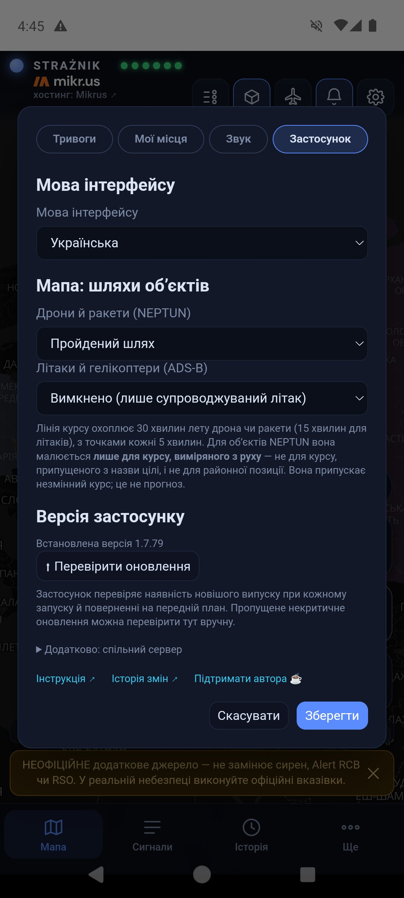
2. Перші кроки: Мої місця, сповіщення, мова
Мої місця
⚙ → Мої місця → 📍 Відкрити Мої місця. Можна зберегти до 8 місць, наприклад Дім, Робота, Поїздка. Для кожного вибираєте воєводство й позначаєте Стежити за тривогами для цього воєводства. Сповіщення приходять для відстежуваних воєводств; кілька місць в одному воєводстві дають одну підписку. Перше місце визначає «мій регіон» на мапі.
Місце може бути й точним: натискання ◎ Зчитати місцеперебування один раз збереже одноразову точку та її точність. Жодного стеження у фоні немає. Коли застосунок відкритий, Strażnik рахує на телефоні відстань до видимих об'єктів. Сповіщення й далі надсилаються на рівні воєводства.
Дані про місця залишаються на пристрої — кнопка так і називається: Зберегти на пристрої.
{kind=link}
{kind=link}
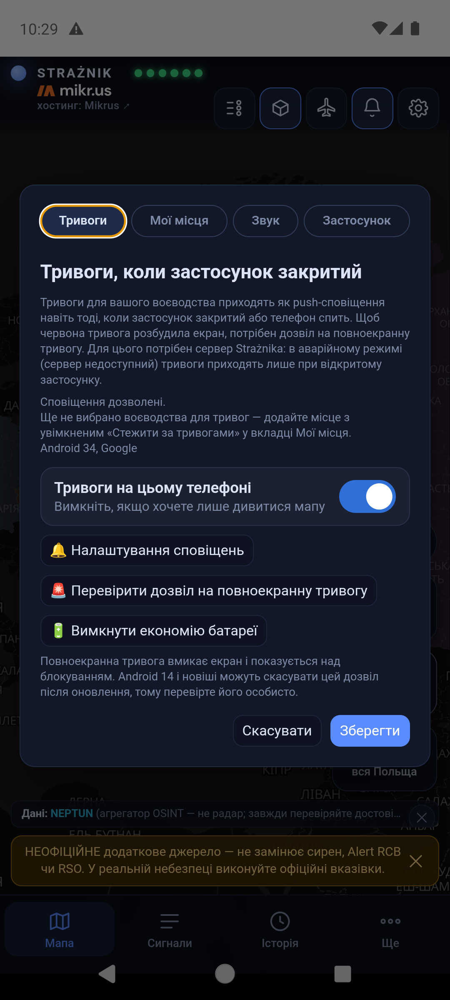
{kind=link}
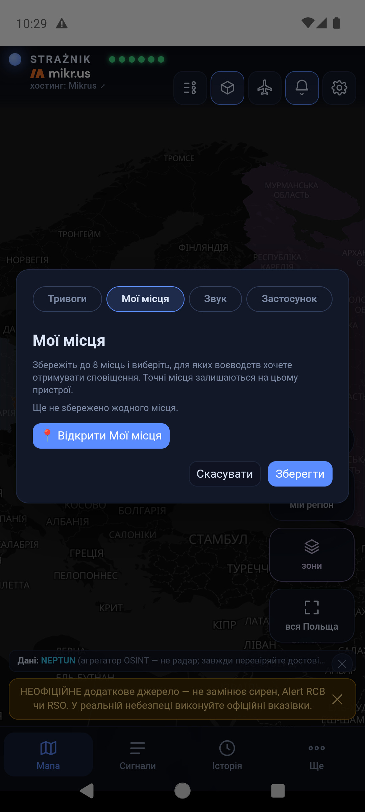
{kind=link}
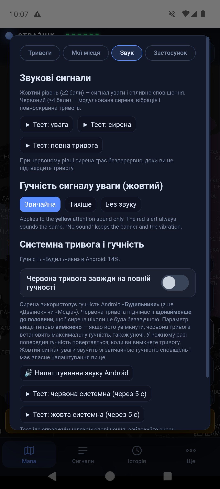
Дозволи Android
Вкладка Тривоги показує, чи сповіщення готові й для якого регіону. Якщо ви хочете лише дивитися мапу, вимкніть Тривоги на цьому телефоні — телефон буде відписано від усіх воєводств і він перестане отримувати сповіщення про тривоги й нагадування про дозволи. Напис над перемикачем показує, на скільки воєводств телефон підписаний (підтверджено Firebase). Дозволи Android залишаються без змін — застосунок не може їх змінити. Попередження про дозволи на мапі можна закрити хрестиком. Кнопки ведуть просто до системних налаштувань: 🔔 Налаштування сповіщень, 🚨 Перевірити дозвіл на повноекранну тривогу і 🔋 Вимкнути економію батареї. Android 14 і новіші можуть скасувати дозвіл на повноекранну тривогу після оновлення — перевірте його особисто. Четверта кнопка, 🌙 Тривога попри «Не турбувати», видно лише тоді, коли цей дозвіл ще не надано; він добровільний і описаний нижче, разом із режимом «Не турбувати».
Polski / English / Українська
⚙ → Застосунок → Мова інтерфейсу. Вікно налаштувань одразу показує вибрану мову; Зберегти перезавантажує застосунок новою мовою, Скасувати лишає попередню. Українська й англійська версії охоплюють інтерфейс, описи об'єктів і підписи на мапі; цитовані повідомлення та заголовки статей залишаються мовою оригіналу.
3. Головний екран
Розкладка має чотири частини: смугу вгорі, плитки вздовж правого краю мапи, банер «мій регіон» над смугою вкладок і вкладки внизу.
| Елемент | Що робить |
|---|---|
| STRAŻNIK і шість діод | Діоди — це джерела: NEPTUN, Тривоги UA, ADS-B, RSS, RCB/RSO, PAŻP. Зелена — джерело відповідає; червона — ні. Діода RCB/RSO показує Регіональну систему оповіщення, якою йдуть офіційні Alert RCB; вона зелена лише тоді, коли RSO відповіло за останні хвилини. Торкання діод відкриває описи джерел; торкання назви — короткий опис застосунку. Зелена діода означає робоче джерело, а не відсутність загрози. |
| Іконка повзунків | Легенда символів, кольорів воєводств і зон. |
| Іконка куба | Вигляд 2D / 3D. У 3D висота воєводства зростає разом із балами — також нижче порога. |
| Іконка літака | Чужі літаки над східним флангом (розділ 8). |
| Іконка дзвіночка | Сповіщення: у застосунку — увімкнути або вимкнути звук; на сайті — сповіщення браузера (розділ 10). |
| Іконка шестерні | Налаштування: Тривоги, Мої місця, Звук, Застосунок. |
| мій регіон | Кадрує мапу на першому збереженому місці. |
| зони | Вмикає й вимикає шар зон PAŻP. Приглушена плитка означає вимкнений шар. |
| вся Польща | Показує Польщу разом з Україною. |
| Банер над вкладками | Ваш регіон, його рівень і бали, напр. «Люблінське — нижче порога 1,0 бала». Торкання відкриває картку воєводства. |
| джерела ⓘ | Подяки за дані й мапу. |
| Вкладки Мапа Сигнали Історія Ще | Мапа повертає до головного вигляду; Сигнали відкривають панель; Історія прокручує 12 годин; Ще — «Про застосунок і бали», «Інструкція», «Підтримати автора», «Укриття — де найближче». |
На старті внизу з'являється смуга «НЕОФІЦІЙНЕ додаткове джерело…». Її можна закрити хрестиком — під час тривоги вона повертається. Панелі й вікна закривайте хрестиком, вкладкою Мапа або торканням поруч із ними.
{kind=link}
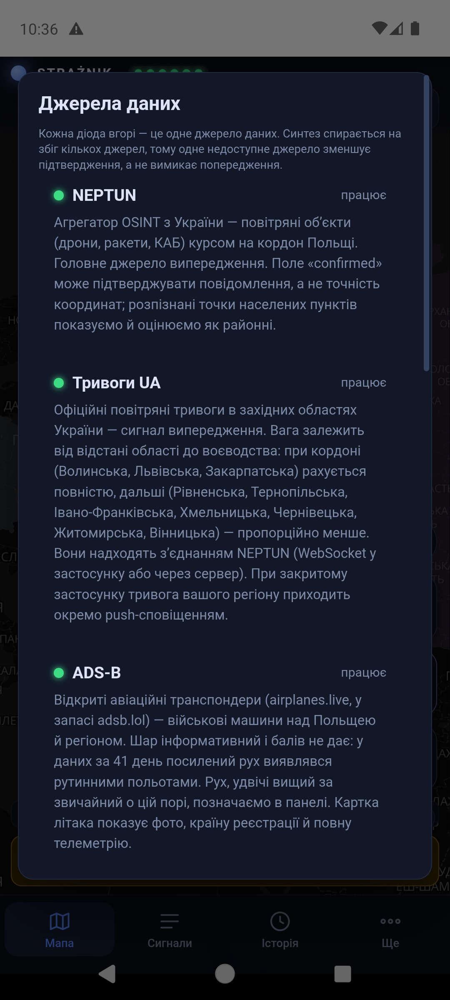
{kind=link}
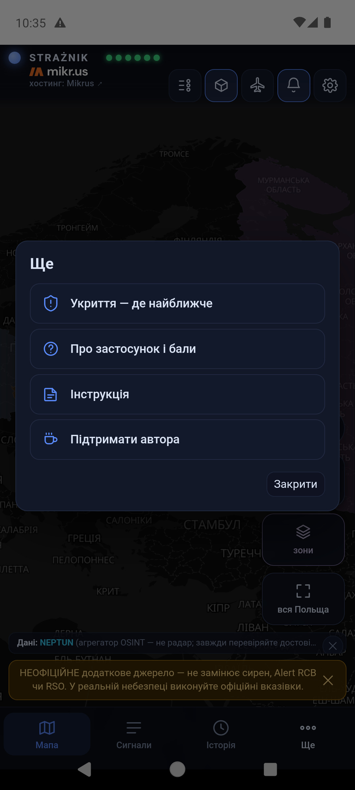
4. Мапа, об'єкти й літаки
Мапу пересувайте пальцем, масштабуйте двома пальцями, об'єктів торкайтеся. Колір воєводства показує його бали за останні 60 хвилин:
| Колір | Значення |
|---|---|
| темно-синій | 0–1,9 бала — спокійно (нижче порога) |
| жовтий | від 2 балів — підвищена увага |
| червоний | від 4 балів і з підтвердженням — високий пріоритет (розділ 11) |
| приглушений, оливковий | колір лише від сусідніх воєводств; картка має пунктирну рамку й напис «піднято сусідством · без тривоги». Такий колір сповіщення не надсилає. |
Об'єкти NEPTUN над Україною мають різні форми — кожну показує легенда:
| Об'єкт | Символ |
|---|---|
| Дрон / БпЛА | жовтий силует із прямими крилами й вирізаним хвостом; червоний ніс і червоний наконечник попереду показують напрямок польоту |
| Дрон Shahed | помаранчеве трикутне крило |
| FPV-дрон | чотири гвинти; локальний, балів не дає |
| Розвідувальний дрон | біло-сірий силует із довгими крилами |
| Крилата ракета | червоний корпус із крилами |
| Балістична ракета | вузький рожевий наконечник |
| Керована авіабомба (КАБ) | жовтий силует бомби |
| МіГ-31К (носій) | фіолетовий літак |
| Невпізнаний об'єкт | сірий ромб зі знаком питання |
Невідомий курс: іконка не обертається, має пунктирне біле кільце і знак питання — вона не вказує напрямку. Лише об'єкти, які зараз додають бали воєводству, мають пульсуюче червоне кільце; решта стоїть спокійно.
Підсвічена рожевим область України з пунктирним контуром має повітряну тривогу, яка зараз додає бали воєводству. Ближчі області видно виразніше, дальші — ледь помітно. Торкання області показує, коли надійшов сигнал і скільки балів він дає якому воєводству.
Коло навколо об'єкта — це невизначеність позиції (±км), а не радіус ураження. Пунктирна лінія — пройдений шлях; малюємо її лише тоді, коли джерело дає позиції, придатні для стеження. У ⚙ → Застосунок → «Мапа: шляхи об'єктів» окремо вибираєте для дронів і ракет та для літаків: вимкнено, пройдений шлях або шлях і курс (лінія на 30 хвилин лету дрона чи ракети, 15 хвилин для літака, з точками кожні 5 хвилин). Курс дронів і ракет малюємо лише тоді, коли його виміряно з руху об'єкта. Об'єкт із приблизною позицією (велике коло невизначеності) не має ні шляху, ні курсу — а більшість об'єктів NEPTUN між повідомленнями стоїть на місці, тож лінії з'являються лише в частини з них. Сині літаки й гелікоптери — це військова авіація з відкритим транспондером ADS-B.
Час під іконкою (наприклад «7 хв») — це вік останнього повідомлення про цей об'єкт. NEPTUN збирає повідомлення людей, а не відбитки радара: об'єкт лишається там, де був, доки хтось не повідомить про нього знову, а іноді наступного повідомлення не буває. Підпис з'являється через п'ять хвилин, і іконка поступово блідне — що блідіша, то старіша інформація. Через годину іконка помітно згасла. Тож нерухомі іконки означають відсутність нових повідомлень, а не завислу мапу. Картка об'єкта показує рядок останнє повідомлення, а після чверті години додає, що відтоді об'єкт міг переміститися.
{kind=link}
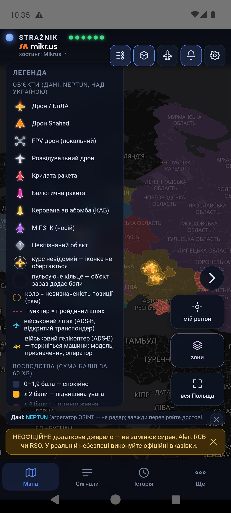
Картки об'єктів і літаків
Торкання об'єкта відкриває міні-картку в лівому нижньому куті й обводить об'єкт на мапі білим кільцем. Стрілка ⌃ розгортає картку, ⌄ згортає, ✕ закриває.
Картка дрона чи ракети показує тип, повідомлений район, кількість підтверджень, достовірність, невизначеність позиції, курс і відстань від кордону Польщі. Час підльоту (ETA) з'являється лише для позицій, придатних для такого обчислення. Коли джерело позначає позицію як район повідомлення, картка пише «приблизний район повідомлення — немає підтвердженого маршруту й часу підльоту», а відстань є оцінкою. Ілюстрації об'єктів згенеровані ШІ й не можуть служити для визначення моделі.
Картка літака чи гелікоптера показує позивний, реєстрацію, країну, модель, призначення, висоту, швидкість і курс. Фото показує приклад машини цієї моделі — автор, джерело й ліцензія вказані під ним. 📍 стежити за шляхом малює слід польоту. Мапа не показує літаків із вимкненим транспондером.


5. Зони PAŻP на мапі
Плитка зони показує активні зони повітряного простору з добового плану Польського агентства аеронавігаційних послуг (PAŻP). Зона, що стоїть давно або вже була активна на початку спостереження, має спокійний фіолетовий контур. Зона, увімкнена нещодавно, вже під час спостереження Strażnika, жовта й має 3D-блок.
Торкання зони відкриває її опис: тип і що він означає, відколи Strażnik її бачить, резервація до (кінець сьогоднішнього вікна в добовому плані — зону можуть продовжити) та діапазон висот. Кнопка з назвою воєводства веде до його картки, бо у воєводство, повністю вкрите зоною, важко влучити пальцем на мапі.
Зони, що накладаються: торкання відкриває найменшу зону під пальцем, а решту в цьому місці показано кнопками «Інші зони в цьому місці».
Сам шар зон балів не додає. Бали дає лише рідкісна зона D, R, NPZ або ADHOC — правила у розділі про бали за зони.


{kind=link}
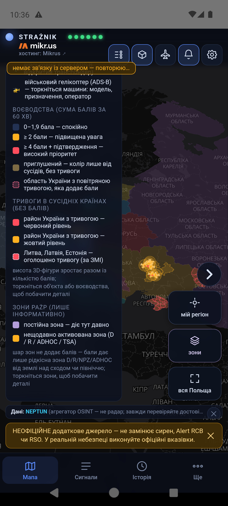
6. Панель сигналів
Вкладка Сигнали відкриває картки воєводств. Ваш регіон іде першим і має підпис «мій регіон». Кожна картка показує бали, рівень, підсумок «складається з» (напр. «0,9 ТРИВОГА UA») і зони PAŻP над воєводством. Торкання картки розгортає список її сигналів.
Кожен рядок сигналу показує джерело, його внесок у балах, заголовок (стаття відкривається як посилання), вік сигналу та його вагу. Сигнал тримає повну вагу 30 хвилин, а потім втрачає її до нуля на 60-й хвилині — саме це означає напис «вага 64%». Перекреслене число — це номінальне значення, яке не зараховано, бо сигнал згасає або клас джерела досяг свого ліміту. Числа в підсумку округлюються поодинці, тому їхня сума може відрізнятися від балів на 0,1.
Сигнал без балів залишається видимим з поясненням:
- Повторення офіційної тривоги — стаття, що переказує свіжий Alert RCB.
- Історичний матеріал / наслідки — річниця, суд, відбудова.
- Скасовано RCB і Після скасування тривоги RCB — скасована тривога RCB та статті про неї.
- Репортаж про попередню подію — сервер прочитав статтю, і вона описує щось давніше за годину.
- Не вдалося прочитати статтю — без балів — текст не вдалося отримати; посилання лишається.
Запис СУСІДИ — це бали, перенесені із сусіднього воєводства (розділ 11).
{kind=link}
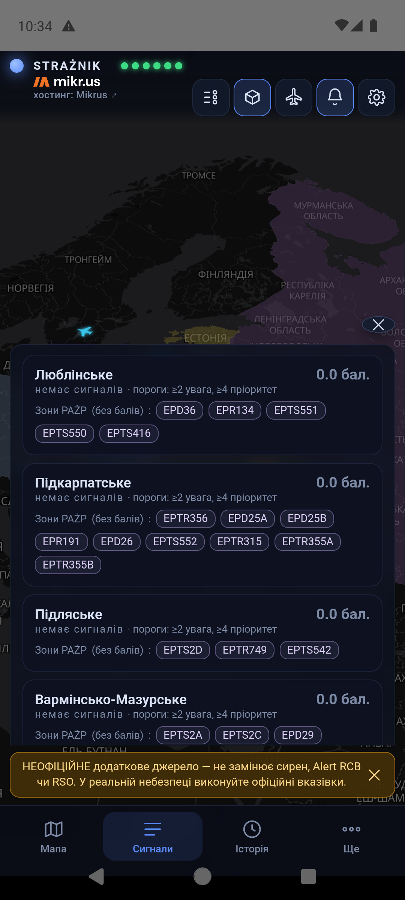
Нижче панель має два списки спостережень без балів: Об'єкти ≤ 250 км від кордону (NEPTUN) і Військова авіація (ADS-B) над сходом Польщі. Це відкриті дані транспондерів, а не стеження за ворожою авіацією. Там, де вони є, картка воєводства пропонує ще 📷 Камери в регіоні — це дорожні камери, а не спосіб виявляти повітряні об'єкти.


7. Історія за 12 годин
Вкладка Історія вмикає ⏱ ПЕРЕГЛЯД ІСТОРІЇ. Доріжка повзунка пофарбована рівнем у кожну мить, тож одразу видно, коли щось відбувалося. Тягніть повзунок: мапа, кольори, об'єкти й літаки показують обрану мить, а підпис дає час і кількість хвилин назад. Під повзунком — воєводство з найбільшою кількістю балів у ту мить, кількість об'єктів і машин у знімку та посилання «N сигналів у вікні», яке відкриває панель для цієї миті.
Під повзунком є ряд кнопок: −12 год (початок), тривога назад (початок попередньої тривоги), −10 і −1 хвилина, ▶ відтворення й пауза, +1 і +10 хвилин, тривога вперед (наступна тривога) та кінець (найновіший знімок). Утримання ±1 і ±10 прокручує далі. ×1 у заголовку перемикає швидкість відтворення на ×2 і ×4.
У режимі історії панель має заголовок ПЕРЕГЛЯД ІСТОРІЇ, а час сигналів рахується від обраної миті («36 хв раніше»). ПЕРЕЙТИ НАЖИВО у заголовку смуги, вкладка Мапа або системна кнопка «назад» повертають поточний вигляд.
Історію завантажуємо на пристрій один раз, і прокручування працює локально, без запиту до сервера за кожним рухом пальця. Знімки зазвичай робляться щохвилини — це відтворення збережених зрізів, а не безперервний запис.
{kind=link}
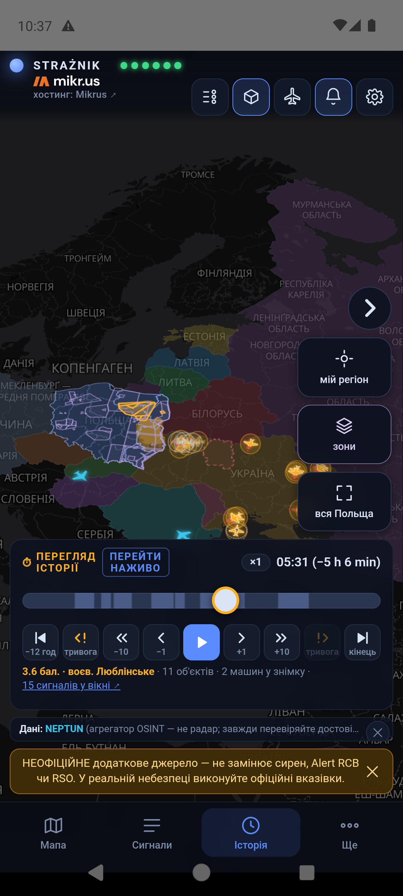
{kind=link}
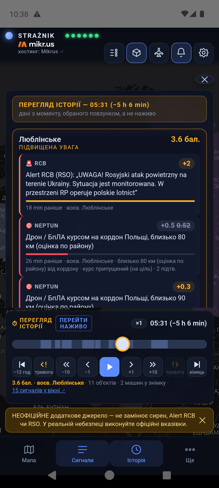
8. Чужі літаки над східним флангом
Іконка літака вгорі відкриває список військових літаків із російською чи білоруською реєстрацією, видимих у відкритих даних ADS-B/MLAT над східним флангом. Панель має дві частини: зараз у зоні і журнал — увійшли / зникли із зони за останні 12 годин, разом із часом, коли застосунок був закритий.
У режимі історії панель іде за обраною миттю. Приглушений літак на мапі — це його остання записана позиція щонайбільше за 2,5 хвилини до того. «Зник» означає втрату сигналу в даних, а не посадку чи збиття. Ці спостереження балів не додають, а порожній список не означає порожнього неба — багато машин летить із вимкненим транспондером.
{kind=link}
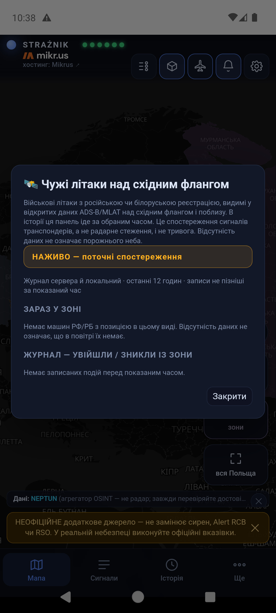
9. Тривоги й сповіщення
| Рівень | Що відбувається |
|---|---|
| нижче 2 балів | Інформація на мапі та в панелі, без сповіщення. |
| жовтий, від 2 балів — ПІДВИЩЕНА УВАГА | Сповіщення й короткий сигнал уваги на звичайній гучності сповіщень. Поважає тихий режим і «Не турбувати». Гучність цього сигналу налаштовується окремо, без впливу на червону тривогу — див. нижче. |
| червоний, від 4 балів і з підтвердженням — ВИСОКИЙ ПРІОРИТЕТ | Сирена, вібрація і повноекранна тривога там, де система це дозволяє. Сирена грає по колу, доки ви не торкнетеся ПІДТВЕРДЖУЮ на екрані тривоги або Wycisz alarm у сповіщенні. Гучність «Будильники» піднімається щонайменше до половини; з увімкненою опцією повної гучності — до максимуму. Попередня гучність повертається після вимкнення. |
Коли телефон дзвонить, а коли ні
- Сповіщення приходять лише для відстежуваних воєводств із Моїх місць.
- Воєводство мусить мати щонайменше 1 бал власних сигналів. Колір лише від сусідів не дзвонить.
- Перенесення від сусідів може закрити поріг щонайбільше на один щабель: власні бали нижче жовтого плюс сусід дають щонайбільше жовтий.
- Без повторів: якщо бали спадуть і знову перетнуть той самий поріг протягом 60 хвилин після сповіщення, зміниться лише мапа. Виняток: новий Alert RCB/RSO. Перехід на вищий рівень, із жовтого на червоний, сповіщає завжди.
- У відкритому застосунку звук іде за тими самими правилами, що й сповіщення, а не за кольором мапи — для кожного відстежуваного воєводства, а не лише для першого місця.
- Сповіщення, яке спізнилося понад 10 хвилин (наприклад, після повернення зв'язку), показуємо беззвучно з підписом «затримано на … хв».
- Текст сповіщення починається з години надсилання («10:54 · …») — тієї, коли сервер визнав загрозу, а не тієї, коли повідомлення дійшло. Ту саму годину показує годинник у кутку сповіщення та екран повноекранної тривоги.
⚙ → Звук має ▶ Тест: увага, ▶ Тест: сирена і ▶ Тест: повна тривога. Ці тести грають усередині вікна застосунку. Застосунок для Android має ще ▶ Тест: червона системна і ▶ Тест: жовта системна: через 5 секунд приходить справжнє сповіщення із сиреною або сигналом уваги, тож можна заблокувати екран і побачити тривогу над блокуванням. Жоден тест не перевіряє дороги push-сповіщення із сервера.
Гучність червоної тривоги
Сирена використовує гучність Android «Будильники», а не «Дзвінок» чи «Медіа». Червона тривога піднімає її щонайменше до половини. Перемикач Червона тривога завжди на повній гучності типово вимкнений; коли ви свідомо його ввімкнете (застосунок попросить підтвердження), сирена звучатиме на максимумі, також уночі. Поточний рівень показано в тій самій вкладці, а 🔊 Налаштування звуку Android відкриває системні регулятори гучності. У застосунку дзвіночок угорі відкриває стан сповіщень.
Жовтий сигнал будить уночі — що з цим робити
У ⚙ → Звук є Гучність сигналу уваги (жовтий) з трьома налаштуваннями: Звичайна, Тихіше (приблизно вдесятеро тихіше) і Без звуку (лишаються банер і вібрація). Це стосується лише жовтого — червона тривога звучить завжди однаково. На Android налаштування діє і при відкритому застосунку, і при згаслому екрані, бо жовтий іде тоді на окремий канал сповіщень. На iPhone воно змінює лише звук у відкритому застосунку: гучність push-сповіщення вибирає система, і застосунок на неї не впливає.
Другий спосіб, доступний у системі просто зараз: увімкніть на ніч «Не турбувати». Ми перевірили це вимірюванням на Android 14 — звичайний режим «Не турбувати» стишує жовтий, а червоний проходить: сирена грає, екран засвічується, повноекранна тривога з’являється над блокуванням. На iPhone те саме робить Режим фокусування (наприклад, Сон): червона тривога позначена як термінове сповіщення й пробивається, жовта — ні.
Одна умова на Android: червона тривога проходить тому, що «Не турбувати» типово пропускає будильники. Якщо в Налаштування → Не турбувати → Будильники та інші переривання вимкнути пункт Будильники, сирена змовкне, а екран не засвітиться — це ми виміряли окремо. Тоді допоможе кнопка 🌙 Тривога попри «Не турбувати» у ⚙ → Тривоги: після надання доступу до режиму «Не турбувати» тривога покажеться на весь екран і засвітить екран. Звук це не поверне.
Як це працює технічно: сервер надсилає push-сповіщення через Firebase для кожного відстежуваного воєводства, також коли застосунок закритий, а екран заблокований. Тривоги приходять і після нічного перезапуску телефону, ще до розблокування. «Примусова зупинка» в налаштуваннях Android — а на деяких телефонах Xiaomi, Huawei чи Oppo також очищення застосунку зі списку останніх — блокує доставку до повторного відкриття застосунку; на таких телефонах налаштування попереджають про це. Аварійний режим: коли сервер не відповідає, відкритий застосунок запускає вбудований рушій і сам опитує джерела; щохвилини перевіряє, чи сервер повернувся. Аварійний режим працює лише при відкритому застосунку й не читає текстів статей у ЗМІ, тому ЗМІ показуємо без балів; текст повідомлення RCB зі сторінки gov.pl він читає так само, як сервер.
Де сховатися — GROTA
Після натискання ПІДТВЕРДЖУЮ — вимкнути сирену сирена змовкає, а екран тривоги показує три кнопки: Де сховатися, Спостерігати за мапою і Я в безпеці. Strażnik ніколи не перемикає екран сам — вибираєте ви.
Де сховатися відкриває модуль GROTA одразу на вкладці ТЕПЕР: він визначає ваше місцеперебування й показує найближчі пункти укриття з відкритого переліку Державної пожежної служби Польщі (dane.gov.pl) — відкриті цілодобово, відкриті у визначені години та «на запит» — з відстанню й маршрутом пішки, велосипедом або автомобілем. GROTA починає завантажуватися у фоні щойно з'являється тривога, тож відкривається одразу після підтвердження. Поза тривогою відкрийте її з Ще → Укриття — де найближче; вона має також вкладки Мапа, Місця, Підготовка і Правила.
- Перелік пунктів і пошук найближчого працюють без інтернету. Маршрут дорогами потребує мережі; без неї ви побачите відстань по прямій.
- GROTA охоплює лише Польщу. Поза кордоном вона показує повідомлення замість маршруту й дає вказати місце вручну.
- Це перелік місць, а не гарантія: пункти, відкриті «у визначені години» чи «на запит», можуть бути зачинені. Запитайте управителя будівлі заздалегідь.
- GROTA говорить українською, англійською та польською — мову виберете в її вкладці Zasady (Правила). Вона є в застосунках для Android та iPhone; на сайті її немає.
На iPhone тривоги працюють інакше: без повного екрана, сирена грає один раз, а вимкнений дзвінок робить її беззвучною. Подробиці й налаштування, які варто перевірити, є в інструкції для iPhone (польською та англійською).
10. Сайт і сповіщення браузера
Та сама мапа працює на straznik.eu. Угорі є також кнопки Завантажити застосунок, Інструкція і Пригостити кавою. Вкладка браузера показує іконку Strażnika.
Сповіщення браузера: спершу збережіть воєводство в ⚙ → Мої місця, потім торкніться дзвіночка й дозвольте сповіщення. Вони приходять також при закритій вкладці — одне на тривогу, без безперервної сирени. Безперервна сирена з вібрацією звучить лише у відкритій вкладці на червоному рівні. На iPhone сповіщення працюють тільки для сайту, доданого на екран «Початок».
Як вимкнути: торкніться дзвіночка (або ⚙ → Тривоги) і виберіть 🔕 Вимкнути сповіщення в цьому браузері. Strażnik тоді прибере підписку на сервері та в браузері. Сам дозвіл браузера знімається в його налаштуваннях — повідомлення підкаже шлях для вашого браузера, наприклад:
У будь-якому браузері: відкрийте його Налаштування, у полі пошуку введіть «налаштування сайтів» (або просто «сайт») → Дозволи → знайдіть straznik.eu → Сповіщення → Блокувати.
Chrome на Android: ⋮ → Налаштування → Налаштування сайтів → Сповіщення → straznik.eu → Блокувати.
11. Звідки беруться бали
Бали рахуються у 60-хвилинному вікні. Перші 30 хвилин сигнал тримає повну вагу, потім втрачає її лінійно до нуля. Кожен клас джерел має ліміт, тож багато статей або обласних тривог про одне й те саме не додаються без обмежень. Повторне спостереження того самого об'єкта NEPTUN не рахується як новий об'єкт.
| Джерело | Що враховуємо | Бали / ліміт |
|---|---|---|
| NEPTUN — об'єкти | Тип, кількість об'єктів, відстань від кордону, курс, достовірність, кількість підтверджень, стан спостереження та якість позиції. Район повідомлення ×0,6, розпізнаний центр населеного пункту ×0,5. | разом до 8 |
| RCB / RSO | Alert RCB про повітряну загрозу, опублікований у RSO. Рахується 60 хвилин від виявлення, незалежно від дати дії запису. Скасування в RSO обнуляє тривогу одразу. Від 17.09.2026 RCB надсилає три види повідомлень, і вони важать відповідно: «ситуацію моніторять» 1,5; «триває масований напад… реагуйте на сигнали тривоги» 3; «загроза нападу з повітря, знайдіть безпечне місце» 4,5. Пізніша тривога не додається до попередньої: рахується поточна, а надлишок сильнішої згасає протягом 10 хвилин. Від 24.09.2026 додатково читається текст повідомлення дня на gov.pl/rcb: RSO іноді передає лише частину отримувачів алерту (17.09 і 24.09 загубилося Підкарпатське воєводство), тож воєводства, яких бракує, беруться зі сторінки — так само й тоді, коли застосунок рахує сам, без сервера. | 1,5 / 3 / 4,5, ліміт 4,5 |
| Тривоги в областях України | Повітряна тривога в західній області України; вага спадає з відстанню (таблиця нижче). Повна вага перші 30 хвилин тривоги, потім половина, доки вона триває; кінець тривоги обнуляє бали одразу. | до 1, ліміт 1 |
| ЗМІ (RSS) | Повітряний об'єкт плюс подія: 0,5 бала; однозначне оперативне повідомлення (сирени, тривога, підняте авіаційне чергування, перехоплення): 1 бал. Сервер читає всю статтю: репортаж про попередню подію або нечитана стаття дають 0. Навчання, річниці, судові справи й переказані тривоги RCB теж дають 0. | 0 / 0,5 / 1, ліміт 1 |
| ADS-B | Щонайменше 3 військові літаки й понад подвійний звичайний рух о цій порі доби (семиденна норма). Від 13.09.2026 лише інформативно: за 41 день даних посилений рух виявлявся рутинними польотами. | 0 |
| Зони PAŻP | Лише рідкісні зони D, R, NPZ, ADHOC від землі вгору над сходом або північчю (нижче). | 0,5 (північ 1), ліміт 1 |
| Балтійські ЗМІ | Повітряний інцидент (порушення простору, збиття) у Литві, Латвії чи Естонії: 1 бал. Оголошена повітряна тривога для населення там — це слід у панелі: Литва 0,3, Латвія 0,18, Естонія 0,12. Канали: LRT і 15min, LSM, ERR. Відбій знімає внесок. Стан каналів і остання тривога — у вікні «Джерела» (торкніться діод). | тривога 0,12–0,3; інцидент 1 |
| Простір сусідів | Закриття повітряного простору в Литві, Естонії та на півночі Румунії. | 0,3, ліміт 0,6 |
Тривоги в областях України — вага за відстанню
Вага спадає плавно: при кордоні 1; 50 км 0,7; 100 км 0,5; 150 км 0,3; 220 км 0,15; 320 км 0,08. Область рахується для обох воєводств, кожного за своєю відстанню. Час рахується від реального початку тривоги: повна вага 30 хвилин, потім половина, доки вона триває. Коли область уже 3 хвилини відсутня у списку тривог, тривога вважається завершеною — бали й підсвічення зникають одразу, а панель показує час закінчення:
| Область | Люблінське: км | вага | Підкарпатське: км | вага |
|---|---|---|---|---|
| Львівська | 0 | 1,00 | 0 | 1,00 |
| Волинська | 0 | 1,00 | 55 | 0,68 |
| Закарпатська | 135 | 0,36 | 0 | 1,00 |
| Івано-Франківська | 100 | 0,50 | 50 | 0,70 |
| Рівненська | 70 | 0,62 | 110 | 0,46 |
| Тернопільська | 100 | 0,50 | 115 | 0,44 |
| Хмельницька | 160 | 0,28 | 190 | 0,21 |
| Чернівецька | 225 | 0,15 | 180 | 0,24 |
| Житомирська | 220 | 0,15 | 265 | 0,12 |
| Вінницька | 280 | 0,11 | 305 | 0,09 |
Навіть тривоги в усіх областях одночасно дають щонайбільше 1 бал — обласні тривоги це одна інформація, а не кілька незалежних підтверджень.
ЗМІ: читаємо всю статтю
Заголовок може ввести в оману: стаття, опублікована о 9:46 із заголовком про сирени, може описувати ніч. Тому сервер завантажує текст статті й шукає час події — годину («перед 4 ранку», «о 4.19»), слова на кшталт «уночі», «перед світанком», «учора» або інший день тижня. Якщо подія сталася понад годину до публікації, статтю показуємо як репортаж про попередню подію, і вона дає 0. Посилання Google News ведуть на сторінку згоди Google, якої сервер не приймає — натомість він шукає ту саму статтю у власному RSS-каналі видавця. Якщо тексту прочитати не вдається, стаття дає 0 і лишається в панелі з посиланням.
Після скасування тривоги RCB у воєводстві статті про сирени чи тривогу дають 0 протягом 4 годин, якщо RCB не оголосить нової тривоги. Підсумкові заголовки на кшталт «Неспокійний ранок…» рахуються щонайбільше на 0,5 бала.
Об'єкти NEPTUN і відстань
Ваги типів: балістична 3,0; МіГ-31К 2,6; крилата 2,4; КАБ 1,8; Shahed 1,4; дрон 1,1; розвідувальний 0,15; FPV 0. Вагу множимо, зокрема, на квадратний корінь із кількості об'єктів і на множники якості даних та курсу. Відстань від кордону діє плавно: 0 км ×1,7; 15 ×1,6; 45 ×1,3; 80 ×1,0; 110 ×0,7; 150 ×0,4; 200 ×0,25; 250 ×0,1; далі 0. За невідомого курсу бали дають лише близькі об'єкти, і то зі зменшеною вагою. Ракета або МіГ-31К у межах 60 км від кордону щонайменше з двома підтвердженнями дають щонайменше 2 бали.
Час підльоту
Картка об'єкта оцінює час до кордону Польщі й до кордону обраного воєводства, а не до адреси. Використовує швидкість, подану джерелом, або типову для класу об'єкта, і віднімає 2,5 хвилини на затримку даних. Для приблизних позицій ETA не показуємо. За відомого курсу, щонайменше двох підтверджень і середньої чи високої достовірності ETA ≤ 10 хв піднімає внесок об'єкта до 2 балів, а ≤ 5 хв — до 4 балів.
Коли вмикається червоний
Самих 4 балів не досить. Від 23 вересня 2026 року червоний потребує ще й підтвердження — одного з двох:
- Тривога RCB зі словами «знайдіть безпечне місце» — найвищий із трьох рівнів, які RCB використовує від 17 вересня. Така тривога вмикає червоний сама, бо держава прямо каже людям ховатися.
- Реальний ударний об'єкт курсом на Польщу — ракета, Shahed, керована авіабомба або бойовий дрон, час якого до кордону становить 15 хвилин або менше чи який ближче ніж 50 км. Друга умова — запобіжник на випадок реактивного дрона (Geran-3/4), якого джерело не описало як реактивний: для нього 50 км — це менш ніж 7 хвилин.
Час рахуємо зі швидкості, типової для класу об'єкта, тож поріг перераховує себе сам: гвинтовий дрон — близько 45 км, реактивний дрон — близько 110 км, крилата ракета — близько 200 км. Розвідувальні дрони підтвердженням не є — вони не б'ють.
Без підтвердження воєводство лишається жовтим навіть при 5 балах, і Strażnik пише про це на картці: «немає підтвердження об'єктом — лишається жовтий». Чому: до 23 вересня тривога RCB про моніторинг ситуації разом із тривогами в областях України та повідомленнями ЗМІ могла зробити воєводство червоним, хоча на мапі нічого не було ближче ніж за 80 км. На даних від 1 вересня нове правило лишає червоний у двох випадках із восьми — саме там, де об'єкт був за 15 хвилин від кордону.
Хвиля об'єктів
Три різні об'єкти курсом на Польщу протягом 15 хвилин і ближче ніж 150 км разом додають 0,5 бала. Кілька об'єктів одночасно означають більше, ніж кожен окремо, а повторні повідомлення про той самий об'єкт хвилі не роблять. Від 1 вересня хвиля траплялася чотири рази, щоразу під час реальної події.
Перенесення до сусідніх воєводств
Воєводство, яке має щонайменше 2 бали із сигналів, інших ніж регіональний Alert RCB, передає 40% сусідам, 16% наступному колу і так далі. Офіційна тривога RCB не передається — її зону визначив той, хто її оголосив. Та сама подія не повертається через перенесення: стаття чи обласна тривога, віднесена до двох сусідніх воєводств, рахується повністю в кожному, але не додається вдруге як перенесення. Перенесення — це регіональний контекст, а не прогноз маршруту об'єкта; колір лише від сусідів приглушений і не дзвонить.
Які зони PAŻP дають бали
PAŻP публікує щодня десятки зон: військові навчання, стрибки з парашутом, планери, комерційні дрони. Якби кожна давала бали, мапа була б жовтою щодня. Тому:
| Тип зони | Значення | Дає бали? |
|---|---|---|
| D — небезпечна зона | стрільби, навчання | так, за трьох умов нижче |
| R — зона обмежень | вхід лише з дозволом | так, за тих самих умов |
| NPZ — зона заборони польотів | закрита територія | так, за тих самих умов |
| ADHOC | створена того самого дня | так, за тих самих умов |
| TSA / TRA | навчання, заплановані заздалегідь, майже щодня | ні — лише на мапі |
| ATZ | звичайний рух навколо аеродрому | ні — не показуємо |
| примітки PJE, GLD, CLN, BSP, UAV | парашути, планери, цивільні дрони | ні — відфільтровано |
Зона D, R, NPZ або ADHOC дає бали лише тоді, коли виконує всі три умови: сягає від землі вгору, той самий позначник не з'являвся протягом останніх 7 днів, і зона лежить над східним кордоном або на півночі. Вага низька (0,5 бала), бо закриття неба — це військове рішення, а не незалежний вимір загрози: сама зона рівня ніколи не піднімає.
На півночі зона важить 1 бал. NEPTUN дивиться на Україну й для Поморського, Західнопоморського, Вармінсько-Мазурського та Куявсько-Поморського воєводств не дає нічого. Залишаються зони, ЗМІ (зокрема хвиля повідомлень про підняті над Балтикою винищувачі), RCB і закриття простору балтійськими сусідами. Правило безпеки не змінюється: зона 1 бал + повідомлення ЗМІ 1 бал = поріг жовтого; від 15.09.2026 балтійський інцидент зі ЗМІ важить лише 0,5 бала і рахується лише свіже повідомлення (до 30 хвилин) про те, що відбувається зараз, тож зона + Балтика — це 1,5 бала; сама зона — це й далі тиша.
12. Обмеження й розв'язання проблем
- Червона діода — одне джерело не відповідає. Решта працює; синтезу просто бракує підтверджень.
- Порожня мапа або всі діоди червоні — перевірте з'єднання і спробуйте іншу мережу. Антивіруси чи проксі, які перехоплюють HTTPS, можуть блокувати з'єднання застосунку; не вимикайте захист назавжди, а додайте виняток для straznik.eu.
- Немає сповіщень — перевірте Мої місця (відстежуване воєводство), дозволи, канали сповіщень, налаштування батареї й чи не було примусової зупинки застосунку. Тест звуку не перевіряє дороги push-сповіщення із сервера.
- Об'єкт є у списку, але не на мапі — сигнал живе у 60-хвилинному вікні, а позиції беруться з поточного знімка. Зникнення об'єкта не доводить, що його збили.
- Неповна картина — NEPTUN це агрегатор OSINT, а не радар; ADS-B бачить лише відкриті транспондери; повідомлення й статті можуть запізнюватися. Відсутність балів не доводить відсутності загрози.
13. Власний сервер — необов'язково
Порожнє поле ⚙ → Застосунок → Додатково: спільний сервер означає типовий сервер Strażnika. Вказуйте власну адресу лише тоді, коли самі запускаєте сумісний сервер і його сповіщення. Потрібен HTTPS із сертифікатом, якому довіряє система. Як запустити сервер, описано в README (англійською). Запуск власного сервера для інших людей потребує ліцензії від автора.
14. Приватність і джерела
Повна політика приватності (польською та англійською) — що лишається на вашому пристрої, що бачить сервер і які треті сторони беруть участь у доставці даних.
Немає облікового запису, реклами й аналітики. Мої місця, їхні назви та одноразові точки місцеперебування зберігаються лише на пристрої; резервне копіювання Android для застосунку вимкнено. Сервер і постачальник сповіщень отримують назви відстежуваних воєводств та ідентифікатор підписки пристрою — ніколи точного місцеперебування. Виняток — маршрут у GROTA: позиція й обрана точка йдуть тоді на відкритий сервер маршрутів FOSSGIS, а не до нас (подробиці).
Сервер і постачальники мап, сповіщень, фотографій та даних отримують звичайні мережеві запити й можуть вести технічні журнали. Читаючи статті, сервер завантажує сторінки видавців як звичайний браузер, не приймаючи згоди на файли cookie.
Дані: NEPTUN · adsb.lol / adsb.fi і запасні постачальники · RCB / RSO · PAŻP · регіональні та балтійські ЗМІ · зони простору сусідів. Мапа: OpenFreeMap, © OpenStreetMap. Автори фотографій літаків вказані в картках.